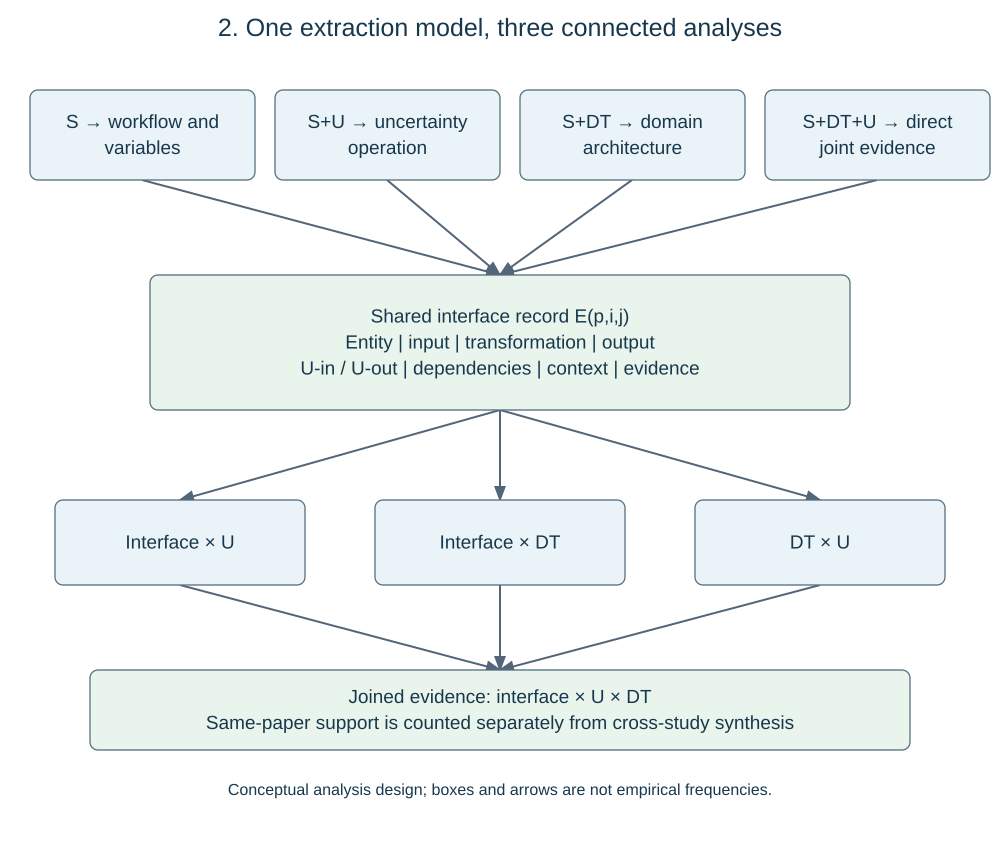
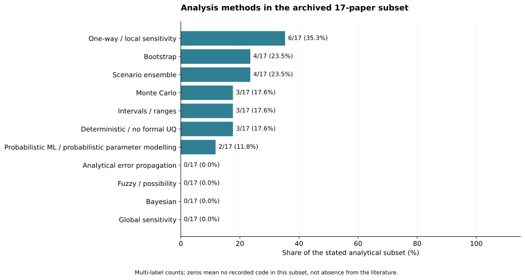
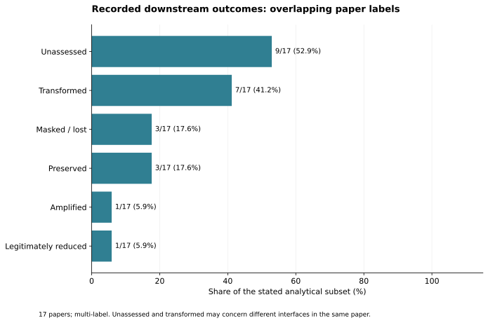
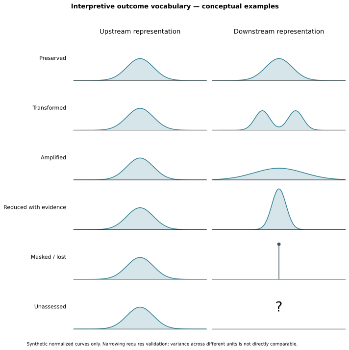
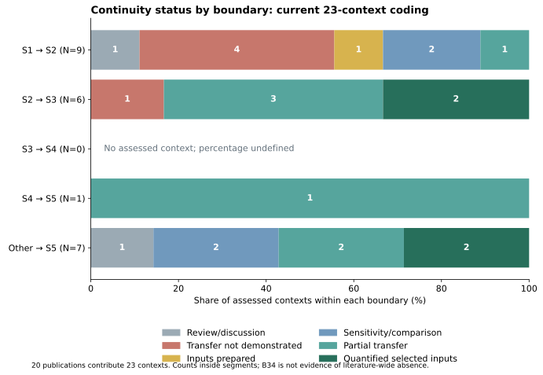
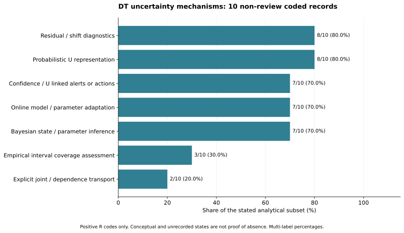
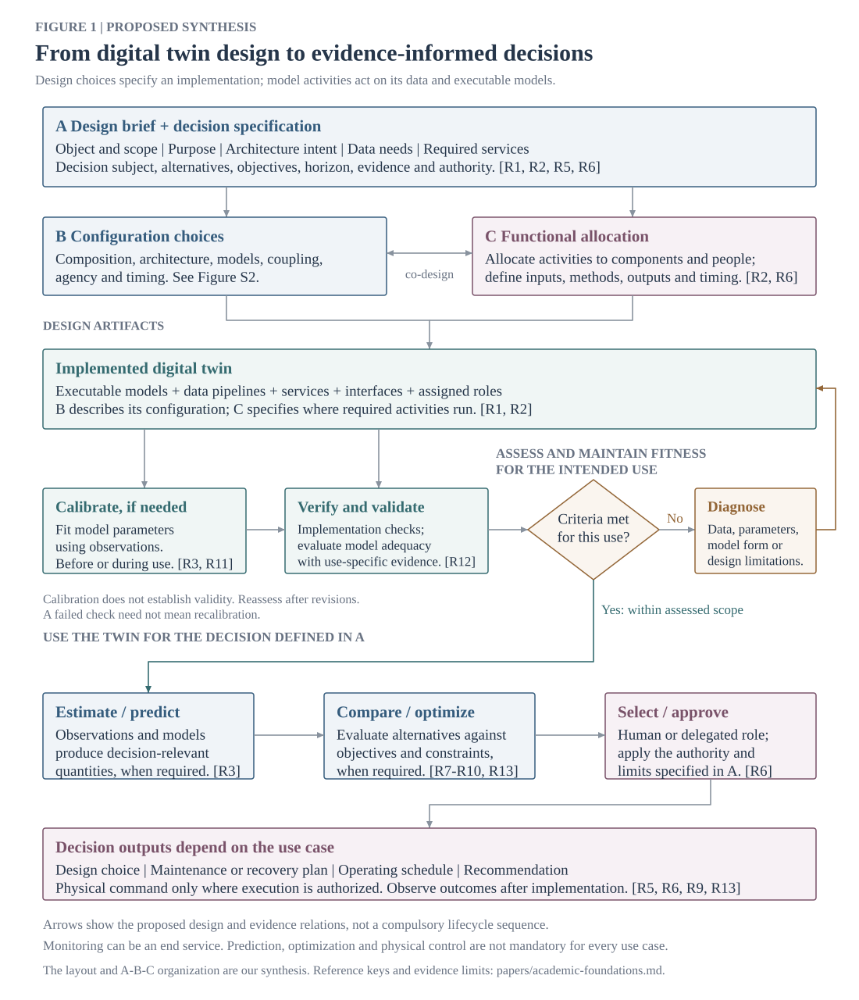
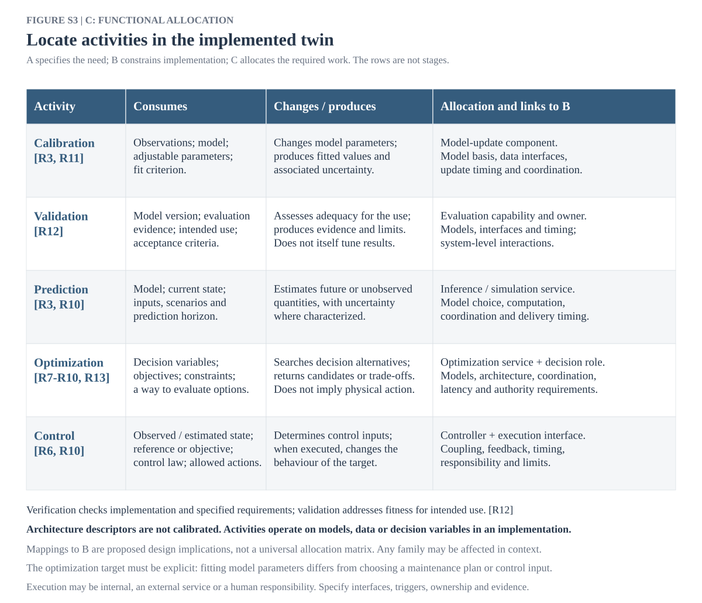

.svg)
Supplementary Figure S8. Configuration vocabulary, not empirical pair frequencies. Unresolved terms remain marked in the original figure.
The adjacent-boundary set is B={B12,B23,B34,B45}, corresponding to S1→S2, S2→S3, S3→S4 and S4→S5. O5 (other inputs→S5) is retained outside this set. A paper with S5 outputs is not automatically assigned B45: its upstream recovery input must be documented. The existing analysis unit is a unique publication–context pair a=(p,b), not an independent study or a physical material flow. Scenario variants within that pair are not counted again. A future scenario-level extraction would require a new unit and denominator.
The archived continuity codebook assigns one primary status c(a): Q, discussion/review; N, downstream transfer not demonstrated; R, inputs prepared for propagation; S, sensitivity/representation comparison; P, partial or incompletely documented transfer; E, quantified outputs for selected uncertain inputs. These are evidence categories, not an ordinal maturity scale. In particular, E does not establish transport of every upstream uncertainty or dependency. The R code here is distinct from the reported-function R code used for DT features.
D01 is computed as n(b,c)=sum over a of 1[b(a)=b and c(a)=c]. Its margins satisfy N(b)=sum_c n(b,c) and sum_b N(b)=|A|. Ribbon width is proportional to n(b,c); it encodes the distribution of assessments into evidence states, not the magnitude of uncertainty transferred. All four adjacent boundaries remain in the exported table, including zero cells. A zero for B34 means no counted assessment in this selected extraction, not absence of relevant research. Multiple pairs from one publication remain dependent. No downstream continuity is inferred by joining different publications into a synthetic S1–S5 trajectory.
To adjudicate an actual transition, extraction must identify the upstream uncertain variable X, its representation U(X), the documented mapping Y=f(X,theta), and the downstream use of U(Y). For stochastic propagation, samples, joint distributions or an equivalent dependence treatment must be traceable through f; a sensitivity plot alone is not such evidence. Updating is separately recorded when new observations change the inferred state or parameter distribution. The notation describes what is inspected in the papers; this review does not itself simulate material stocks or perform Bayesian updating. An interval on Y without a documented connection to upstream X supports output-UQ evidence but not necessarily end-to-end continuity (Michiels and Geeraerd, 2020; Kapteyn et al., 2021).
For each publication p, stage s and function f, x(p,s,f)=1 only when the source coding contains a reported-function state R. C denotes conceptual/proposed/review support and NR denotes no positive recorded feature. R is not independent validation or proof of an operational whole-system twin. The weighted bipartite network has w(s,f)=sum_p x(p,s,f); stage-node counts are the distinct union of supporting publications across functions, and function-node counts are the corresponding union across stages. Repeated tags within a publication–stage–function cell must be collapsed before aggregation.
Only S1–S5 cells enter the network; X-coded adjacent construction, scheduling or cost functions remain outside it. Edge width is proportional to w. In the archived plotting implementation, stage-node area is 220+55N(s) points squared and function-node area is 170+45N(f), so node size is an affine visual encoding, not a strictly proportional area encoding. The network is an incidence map without inter-stage direction. Even if the same paper supports S2 and S3, a transition is counted only after its input–mapping–output connection is separately evidenced. D02 supplies candidate functions for the transition join; it does not substitute for that join.
The aggregation audit independently reconstructs D01 cells from context records, D02 weights from R-coded cells, D03 exact memberships from mechanism codes and D04 intersections from source/method assignments. It checks unique keys, ID sets, marginal conservation, row denominators and source-file hashes. The current snapshot reproduces 23 contexts from 20 publications, 16 positive stage–function edges, nine exact configurations across ten non-review records, and 46 positive cells in the 100-cell source–method matrix. These are analysis-subset counts, not PRISMA included-study totals.
This arithmetic check does not reread or validate the semantic interpretation of every paper. Some archived extraction anchors refer to earlier coding tables rather than page-specific primary evidence. Such cases require evidence-locator completion and compatibility checks against the current eligibility ledger before submission. The figures are therefore reproducible from the archived coding, but are not certified as a newly completed full-text synthesis. No statistical independence, inter-reviewer agreement or significance test is inferred from successful reproduction.
The 17-paper legacy subset is retained separately from the 20-paper/23-context set. Source and method tokens are counted once per publication and divided by 17. Outcome labels are reconstructed from explicit legacy wording using documented aliases; multiple outcomes can occur in a publication. Supporting IDs and percentages are exported. This tests numerical reproduction, not a new semantic judgement. Eligibility is cross-linked by DOI. Probabilistic densities in the outcome vocabulary are synthetic illustrations, not extracted distributions. Mechanism percentages use ten non-review DT records and positive R codes. No pooling of uncertainty magnitudes, variance contributions or reductions is performed because compatible quantitative quantities and conditions have not been extracted.
| Block | Search concepts and examples |
| Domain B | building stock*, existing building*, built environment, material cadastre*, resource cadastre* |
| S1 | GeoAI, remote sensing, computer vision, LiDAR, point cloud*, building geometry, building classification |
| S2 | material stock*, material inventor*, material intensit*, material composition, building archetype*, quantity takeoff |
| S3 | material flow*, dynamic stock*, stock turnover, service life, building lifetime*, demolition timing, material outflow* |
| S4 | reuse, recycl*, recover*, deconstruction, urban mining, disassembl*, secondary material*, reverse logistics |
| S5 | life cycle assessment, embodied carbon, environmental impact*, carbon footprint, decision support |
| DT | "digital twin" OR "digital twins" |
| U | uncertaint*, probabil*, stochastic*, Bayesian, "Monte Carlo", sensitiv*, variabil*, calibrat*, robust*, prediction/confidence intervals |

Supplementary Figure S1. Shared interface record and evidence joins.

Supplementary Figure S2. Recalculated method frequencies in the same 17 papers; broad legacy codes retain their original scope.

Supplementary Figure S3. Legacy outcome labels reconstructed with supporting IDs. These are not measured variance changes.

Supplementary Figure S4. Conceptual outcome vocabulary. Synthetic normalized curves; not data from the reviewed models.

Supplementary Figure S5. Within-boundary percentages and counts. B34 denominator is zero, so its percentage is undefined.

Supplementary Figure S6. Positive mechanism frequency in ten non-review general-DT records.

Supplementary Figure S7. Previously developed design-to-use synthesis. R keys are resolved in the accompanying foundations register; arrows are conceptual.
Supplementary Figure S8. Configuration vocabulary, not empirical pair frequencies. Unresolved terms remain marked in the original figure.

Supplementary Figure S9. Functional allocation. Activities are not equivalent to material-flow stages.
The R register is a conceptual seed bibliography, not a separately completed systematic corpus. Source-specific access limits are retained in inputs/academic-foundations.md.
| R1 | Xiong, Guanyu; Li, Haijiang; Gao, Yan. 2025. Cross-domain comparative analysis of digital twins and universalised solutions. Advanced Engineering Informatics. https://doi.org/10.1016/j.aei.2025.103726 |
| R2 | Human, C.; Basson, A. H.; Kruger, K.. 2023. A design framework for a system of digital twins and services. Computers in Industry. https://doi.org/10.1016/j.compind.2022.103796 |
| R3 | Kapteyn, Michael G.; Pretorius, Jacob V. R.; Willcox, Karen E.. 2021. A probabilistic graphical model foundation for enabling predictive digital twins at scale. Nature Computational Science. https://doi.org/10.1038/s43588-021-00069-0 |
| R4 | Ferrari, Alberto; Willcox, Karen. 2024. Digital twins in mechanical and aerospace engineering. Nature Computational Science. https://doi.org/10.1038/s43588-024-00613-8 |
| R5 | Shao, Guodong; Helu, Moneer. 2020. Framework for a Digital Twin in Manufacturing: Scope and Requirements. Manufacturing Letters. https://doi.org/10.1016/j.mfglet.2020.04.004 |
| R6 | Agrawal, Ashwin; Thiel, Robert; Jain, Pooja; Singh, Vishal; Fischer, Martin. 2023. Digital Twin: Where do humans fit in?. Automation in Construction. https://doi.org/10.1016/j.autcon.2023.104749 |
| R7 | Walton, Ryan B.; Ciarallo, Frank W.; Champagne, Lance E.. 2024. A unified digital twin approach incorporating virtual, physical, and prescriptive analytical components to support adaptive real-time decision-making. Computers & Industrial Engineering. https://doi.org/10.1016/j.cie.2024.110241 |
| R8 | Ogunsakin, R.; Mehandjiev, N.; Marin, C. A.. 2023. Towards adaptive digital twins architecture. Computers in Industry. https://doi.org/10.1016/j.compind.2023.103920 |
| R9 | Kerin, Mairi; Hartono, Natalia; Pham, D. T.. 2023. Optimising remanufacturing decision-making using the bees algorithm in product digital twins. Scientific Reports. https://doi.org/10.1038/s41598-023-27631-2 |
| R10 | Chen, Yi-Ping; Suarez, Derick; Tsai, Ying-Kuan; Karkaria, Vispi; Hu, Guanzhong; Chen, Zihan; Guo, Ping; Cao, Jian; Chen, Wei. 2026. Adaptive digital twin of sheet metal forming via proper orthogonal decomposition-based Koopman operator with model predictive control. Journal of Manufacturing Systems. https://doi.org/10.1016/j.jmsy.2026.04.004 |
| R11 | Lugaresi, Giovanni; Dhore, Abdirahman Said; Matta, Andrea. 2026. Joint online validation and parameter calibration within a digital twin framework: an approach based on bootstrap particle filtering. Procedia CIRP. https://doi.org/10.1016/j.procir.2026.03.284 |
| R12 | Bitencourt, Julia; Wooley, Ana; Harris, Gregory. 2025. Verification and validation of digital twins: a systematic literature review for manufacturing applications. International Journal of Production Research. https://doi.org/10.1080/00207543.2024.2357741 |
| R13 | van Beek, Anton; Karkaria, Vispi Nevile; Chen, Wei. 2023. Digital twins for the designs of systems: a perspective. Structural and Multidisciplinary Optimization. https://doi.org/10.1007/s00158-023-03488-x |
| R14 | Kritzinger, Werner; Karner, Matthias; Traar, Georg; Henjes, Jan; Sihn, Wilfried. 2018. Digital Twin in manufacturing: A categorical literature review and classification. IFAC-PapersOnLine. https://doi.org/10.1016/j.ifacol.2018.08.474 |
| R15 | Kosse, Simon; Hagedorn, Philipp; König, Markus. 2025. Semantic Digital Twins in Construction: Developing a modular System Reference Architecture based on Information Containers. Advanced Engineering Informatics. https://doi.org/10.1016/j.aei.2025.103483 |
| R16 | . 2026. Systems of Digital Twins: A Systematic Literature Review and a formal framework. Digital Engineering. https://doi.org/10.1016/j.dte.2026.100100 |